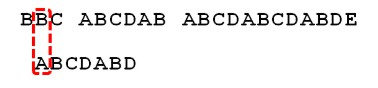

串
串的定义
串(string):是由零个或多个字符组成的有限序列,又名字符串.
一般记为s=” $a_1a_2…a_n$”(n>=0),其中,s是串的名称,用双引号(一些语言使用单引号)括起来的字符序列是串的值,值得注意的是引号并不属于串的内容.$a_i$(1<=i<=n)可以是字母;数字或其他字符,i就是该字符在串中的位置.串中的字符数目n称为串的长度,定义中的”有限”是指长度n是一个有限的数值.零个字符的串称为空串(null string),可以直接使用一对””表示,也可以用希腊字母”φ”表示.所谓序列说明串的相邻字符之间具有前驱和后继的关系.
除此之外需要注意
- 空格串,是只包含空格的串.不是空串
- 子串与主串,传中任意个数的连续字符组成的子序列称为该串的子串,相应的,包含子串的串称为主串
- 子串在主串中的位置就是子串的第一个字符在主串中的序号
串的比较
- 相等,只有两个串的长度以及他们各个对应位置的字符都相等时,才是相等.
- 给定两个串:s=”$a_1a_2…a_n$”,t=”$b_1b_2…b_m$”,当满足下列条件之一时,s< t.
- n< m,且$a_i==b_i$(i=1,2,…,n).例如当s=”hap”,t=”happy”,就有s< t.
- 存在某个k<=min(m,n),使得$a_i=b_i$(i=1,2,…,k-1),$a_k<b_k$.例如当s=”happen”,t=”happy”,一位两串的前四个字母具相同,但第五个字母(k值)不同,字母的ASCII码是101,字母y的ASCII码是121,显然’e’<’y’,所以s< t.
串的抽象数据类型
1 | ADT 串(string) |
Index操作实现算法:1
2
3
4
5
6
7
8
9
10
11
12
13
14
15
16
17
18
19
20
21
22
23/*T为非空串.若主串S中第pos个字符之后存在于T相等的子串,
则返回第一个这样的子串在S中的位置,否则返回0*/
int Index (String S,String T,int pos)
{
int n,m,i;
String sub;
if(pos > 0)
{
n = StrLength(S); //得到主串S的长度
m = StrLength(T); //得到子串T的长度
i = pos;
while(i<= n-,+1)
{
SubString(sub,S,i,m); //取主串第i个位置,长度与T相等子串给sub
if (StrCompare(sub,T)!=0) //如果两串不相等
++i;
else //如果两串相等
return i; //则返回i值
}
}
return 0; //若无子串与T相等,返回0
}
串的存储结构
串的存储结构与线性表相同,分为两种
串的顺序存储结构
串的顺序存储结构是用一组地址连续的存储单元来存储串中的字符序列.按照预定义的大小,为每个定义的串变量分配一个固定长度的存储区.
既然是定长数组,就存在一个预定义的最大串长度,一般将实际的串长度值保存在数组的0下标处,也有保存在尾部的,也有使用不计入串长度结束标记符比如”\0”表示串的终结,但串的长度需要编译一边才知道如图5-5-1.
串的链式存储结构
对于串的链式存储结构，与线性表是相似的，但由于串结构的特殊性，结构中的每个数据元素是一个字符，一个结点只存储能够存储不止一个字符，当最后一个结点未占满时，可以”#”或其他非串值字符补全,如图5-5-3所示.
一个结点存多少个字符,会影响到串的处理的效率,需根据实际情况作出选择.
串的链式存储结构除了在连接串与淳操作时有一定方便之外,总的来说不如顺序存储灵活,性能也不如顺序存储结构好.
KMP模式匹配算法
由于《大话数据结构》中关于KMP模式匹配算法的部分是在难以教会愚钝的我,所以以下内容是从灌输乐园的博客从头到尾彻底理解KMP中学来的
暴力匹配算法
假设现在面临这样一个问题:有一个文本串S和一个模式串P,现在要查找P在S中的位置,怎么查找?
如果使用暴力匹配的思路,并假设现在文本串S匹配到i位置,模式串匹配到j位置,则有:
- 如果当前字符匹配成功(即S[i]==P[i]),则i++,j++,继续匹配下一个字符;
- 如果失配(即s[i]!=P[j]),令i=i-(j-1),j=0.相当于每次匹配失败时,i回溯,j被置为0.
代码如下:举个例子,如果给定文本串S=”BBC ABCDAB ABCDABCDABDE”,和模式串P=”ABCDABD”,现在要拿模式串P去跟文本串S匹配,整个过程如下所示:1
2
3
4
5
6
7
8
9
10
11
12
13
14
15
16
17
18
19
20
21
22
23
24
25
26
27
28int ViolentMatch(char* s,char* p)
{
int sLen = strlen(s);
int pLen = strlen(p);
int i = 0;
int j = 0;
while (i < sLen && j < pLen)
{
if (s[i] == p[j])
{
//如果当前字符匹配成功(即S[i]==P[i]),则i++,j++,继续匹配下一个字符
i++;
j++;
}
else
{
//如果失配(即s[i]!=P[j]),令i=i-(j-1),j=0.相当于每次匹配失败时,i回溯,j被置为0.
i = i - j + 1;
j = 0;
}
}
//匹配成功,返回模式串p在文本串s中的位置,否则返回-1
if (j == pLen)
return i-j;
else
return -1;
}
- S[0]为B,P[0]为A,不匹配,执行第2条指令:”如果失配(即S[i]!=P[j]),令i = i - (j-1)”,S[1]跟P[0]匹配,相当于模式串要想有一栋一位(i=1,j=0).
- S[1]跟P[0]还是不匹配,继续执行第2条指令,不断执行该命令后,i从2变到4,j一直0.
- 直到S[4]跟P[0]匹配成功(i=4,j=0),此时按照上面的暴力匹配算法的思路,转而执行第1条指令:”如果当前字符匹配成功(即S[i]==P[j]),则i++,j++”,可得S[i]为S[5],P[j]为P[1],即接下来S[5]跟P[1]匹配(i=5,j=1)
- S[5]跟P[1]匹配成功,继续执行第1条指令,得到S[6]跟P[2]匹配(i=6,j=2),如此进行.
- 直到S[10]为空格字符,P[6]为字符D(i=10,j=6),不匹配,重新执行第2条指令,得(i=5,j=0)
- 至此,可以看到,如果按暴力匹配算法的思路,尽管之前文本串和模式串已经分别匹配到了S[9]、P[5],但因为S[10]跟P[6]不匹配,所以文本串 回溯到S[5],模式串回溯到P[0],从而让S[5]跟P[0]匹配.

而S[5]肯定与P[0]失配,为什么?因为在之前第4步匹配中,我们已经的值S[5]=P[1]=B,而P[0]=A,即P[1]!=P[0],故S[5]必定不等于P[0],所以回溯过去必然导致失配.那有没有一种算法,让i不往回退,只需要移动j即可?
这时,KMP的出现解决了这个问题,KMP利用之前已经部分匹配这个有效信息,保持i不回溯,通过修改j的位置,让模式串尽量地移动到有效地位置.KMP算法
定义
Knuth-Morris-Pratt字符串查找算法,简称”KMP算法”,常用于在一个文本串内查找一个模式串的出现位置.
KMP算法流程:
- 假设现在文本串S匹配到i位置,模式串P匹配到j位置
- 如果j = -1,或者当前字符匹配成功(即S[i]==P[j]),都领i++,j++,继续匹配下一个字符;
- 如果j!=-1,且当前字符匹配失败(即S[i]!=P[j]),则令i不变,j=next[j].此举意味着失配时,模式串P相对于文本串S享有移动了j-next[j]位.
- 换言之,当匹配失败时,模式初向右移动的位数为:失配字符所在位置-适配子夫对应的next值,即移动的实际位数为:j-next[j],且此值大于等于1.
next数组各值的含义:代表当前字符之前的字符串中,有多大长度的相同前缀后缀.例如如果next[j] = k,代表j之前的字符串中有最大长度为k的相同前缀后缀.
这也意味着在么讴歌字符失配时,该字符对应的next值会告诉你下一步的匹配中,模式串应该跳到哪个位置(跳到next[j]的位置).如果next[j]等于0或-1,则跳到模式串的开头字符,若next[j]=k且k>0,代表下次匹配跳到j之前的某个字符,而不是跳到开头,且具体跳过了k个字符.
代码如下:继续那之前的例子来说,,当S[10]跟P[6]匹配失败时,KMP不是个暴力匹配那样简单的把模式串右移一位,而是执行第2条指令:”如果j!=-1,且当前字符匹配失败(即S[i]!=P[j]),责令i不变,j = next[j]”,即j从6变到2(后面我们将球的P[6],即字符D对应的next值为2),所以相当于模式串向右的位数为j-nextj.1
2
3
4
5
6
7
8
9
10
11
12
13
14
15
16
17
18
19
20
21
22
23
24
25int KmpSearch(char* s,char* p)
{
int i = 0;
int j = 0;
int sLen = strlen(s);
int pLen = strlen(p);
while(i < sLen && j < pLen)
{
if(j == -1 || s[i] == p[j])
{
i++;
j++;
}
else
{
//如果j!=-1,且当前字符匹配失败(即S[i]!P[j]),则令i不变,j = next[j]
//next[j]即为j所对应的next值
j = next[j];
}
}
if (j == pLen)
return i-j;
else
return -1;
}
向右移动4位后,S[10]跟P[2]继续匹配.为什么要向右移动4位?因为移动4位后,模式串中仅有个”AB”可以继续跟S[8]S[9]对应着,从而不用让i回溯.相当于在除去字符D的魔术春中巽宅相同前缀和后缀,然后根据前缀和后缀求出next数组,最后基于next数组进行匹配步骤
- 换言之,当匹配失败时,模式初向右移动的位数为:失配字符所在位置-适配子夫对应的next值,即移动的实际位数为:j-next[j],且此值大于等于1.
- 寻找前缀后缀最长公共元素长度
- 对于P = $p_0 p_1…P_{j-1} p_j$,寻找模式串P中长度最大且相等的前缀和后缀.如果存在$p_0 p_1 p_{k-1} p_k = p_{j-k} $